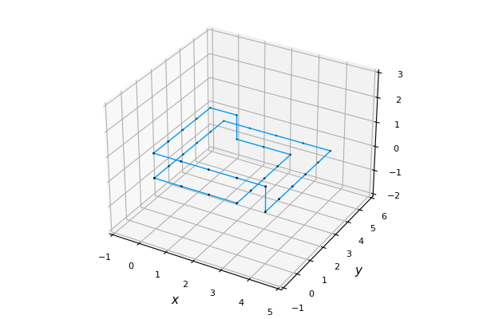

My research interests interests include mathematical modeling, scientific computing, numerical methods, and differential equations. Below are some of the projects I am currently working on and have worked on in the past.
Blood Conductivity Modeling
In collaboration with Dr. Christel Hohenegger, Dr. Braxton Osting, Dr. Benjamin Sanchez, Tyler Schuesler, and Henry Crandall, we are studying a blood flow model that takes as input blood pressure and several other physiological parameters, and outputs fluid velocity, arterial wall displacement, shear stress, and electrical conductivity of the artery. We are interested in developing this model such that it can match real life skin-level measurements of electrical impedance so that we can understand the link between conductivity and blood pressure.
Modeling Closed Vortices as Self-Avoiding Polygons
In this work, we extend on former work by modeling closed-loop vortices, such as dolphin bubble rings or smoke rings, as self-avoiding polygons in the cubic lattice.  We then used a discrete approximation of an integral form of kinetic energy to study the maximum, minumum, and average energies of different length configurations. We begin by enumerating self-avoiding polygons through length sixteen, and then implemented sets of transformations for use in Metropolis Markov Chain Monte-Carlo methods for sampling longer length configurations and estimating average energy across varying statistical temperatures. We find that in general for small lengths, the lowest energy polygon did not share the same shape as the lowest energy walk, however the energies were close suggesting a good starting guess for finding a better minimum. In addition, we discovered an interesting pattern for high energy configurations that are difficult to attain with MCMC that may require a new set of transformations to achieve. Lastly, we compare combinations of transformations in order to best achieve low energy configurations and propose a dynamic combination approach to be implemented. Our results suggest that the model applied to closed-loop vortices could be helpful in finding near minimum energy open vortices and that sampling from closed vortices in the cubiclattice may be trickier than open vortices for high statistical temperature
Here is my honor's thesis presentation.
Age Informed Modeling of Carbon Sequestration in Forests (2022 MCM/ICM)
This is a work from me and two other Gustavus students, Sophia Nelson and Abigayle Paulson, in which we competed in the 2022 MCM-ICM math modeling competition. Here, we developed a discrete age-structured model that tracks the number of trees over time subject to planting and harvesting. In addition, this model tracked the number of carbon sequestered (stored) by trees and by harvested wood products over time to understand the climate impact of different amounts of harvesting. We use this model to understand strategies for harvesting and planting cycles that help to try to optimize the amount of carbon sequestration.
Here is our submission.
Port and Sweep Solitaire Army Problem
Peg solitaire is a puzzle game in which a player attempts to hop pegs, removing hopped pegs from the board, to reduce an initial board down to one peg. It is a puzzle with extensive mathematical research and literature revealing connections to modular 3 invariants, the Fibonacci numbers, the golden ratio, and more. Port-and-Sweep Solitaire (PaSS) was created in 2010 and differs from peg solitaire in the number of pegs or counters that can be on a single space and the type of moves available to the player. The one-dimensional army problem involves working with configurations of pegs and using valid solitaire moves in the proper order to advance the army of pegs as far to the left of its starting position as possible. While the standard peg solitaire result is quite uninteresting, a maximum advance of one space, the problem in PaSS is more complex. With the use of a non-increasing board value function, deduction, and linear algebra, we present a definite upper-bound on the advances of PaSS armies, minimal configurations of armies that progress as far as has been shown possible, and a solution to the PaSS army problem given assumptions that match all current army advances.
Here is a presentation given by Ha and I at a Gustavus Symposium.
One-dimensional Port-and-Sweep Solitaire Armies by Filip Bělík, Ha Le, and Jacob Siehler.Play the game and learn about the strategy here.